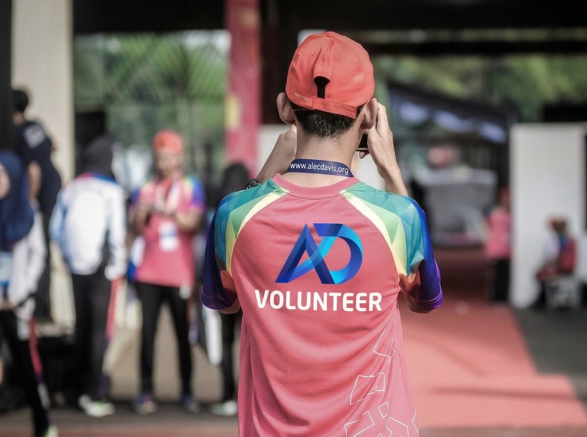

One billion dollars. Locked forever. Giving every year.
Our mission begins with a single goal: to build a $1 billion permanent endowment whose principal is never spent, and whose investment returns serve American communities for generations.
To build and faithfully steward a permanent endowment whose returns protect the vulnerable, strengthen families and communities, and advance human health and knowledge across America.
A nation where every generation can count on a foundation that never stops giving: funded once, protected always, and devoted to doing good forever.
Why $1 billion?
Scale is what makes permanence possible. An endowment of this size can generate meaningful support every year from its returns alone, without ever touching the principal.
Permanent principal, raised once and locked away for good.
Of that principal ever spent on grants, programs or operations.
Illustrative annual giving from returns, at a 5% rate.
And beyond. The endowment is designed to give with no end date.
Preserve the principal. Give the growth.
The structure is simple, time-tested and built for permanence. It is the same model that has sustained great universities and institutions for centuries.
The principal is never spent.
Once raised, the $1 billion endowment is permanently set aside. It is not used for grants, salaries, buildings or emergencies. It is the foundation's bedrock, and it stays intact.
This discipline is what allows the foundation to promise something most charities cannot: that it will still be giving a hundred years from now.
The endowment is put to work, prudently.
The principal is invested in a diversified, professionally managed portfolio under a written investment policy. The goal is not speculation. It is reliable growth that outpaces inflation across decades.
Over time, a disciplined portfolio can generate returns large enough to fund substantial giving while preserving the endowment's real value.
- Diversified across asset classes to manage risk.
- Long-term focused, built to weather market cycles.
- Overseen by a board and qualified investment advisors.

The returns are given away. Every year.
The investment earnings, not the principal, fund the foundation's grants and programs across its 13 pillars of impact. When the year ends, the endowment is still whole and ready to do it again.
Year after year, decade after decade, the same endowment keeps producing new support for the people and causes that need it most.
What a permanent endowment can give
Adjust the endowment size and annual return rate to see how much could be given away each year while the principal stays fully intact.
Endowment calculator
An illustration of the perpetual giving model.
Figures are illustrative only. Actual investment returns vary from year to year, are not guaranteed, and payout policy will be set by the foundation's board.
After a century of giving, the original endowment is still there, ready for the next hundred years.
From campaign to perpetual foundation
The foundation is being built in deliberate stages. Here is the path from today's campaign to a fully operating, permanent foundation.
Accumulation
Contributions are gathered as restricted capital and remain fully invested. No program spending occurs during this phase.
Goal reached
The campaign secures the full $1 billion that will become the permanent principal.
IRS approval
The Alec Davis Foundation is formally established and recognized as a nonprofit private operating foundation.
Exit grant
The entire endowment is transferred from our fiscal sponsor to the new foundation in a single exit grant.
Perpetual giving
The principal is locked, the portfolio is invested, and returns fund programs every year, forever.
Learn more about our fiscal sponsorship during the campaign.
Six commitments we will not break
The principal is permanent
The $1 billion endowment will never be spent. Only its investment returns fund our work.
Every campaign dollar is invested
During accumulation, 100% of net contributions stay invested and dedicated to the endowment.
Home comes first
The overwhelming majority of grants will serve communities in the United States.
Transparent reporting
Supporters will receive regular updates on the campaign, the endowment and our impact.
Responsible governance
Independent oversight, a written investment policy, and careful stewardship at every level.
Built for generations
Every decision is made with the foundation's next hundred years in mind.
About the endowment
Why build an endowment instead of spending donations right away?
Spending donations helps once. Endowing them helps forever. By preserving the principal and giving away only its returns, every dollar contributed today will keep producing new support year after year, long after the original gift was made.
What does it mean that the principal is "locked"?
The $1 billion principal will be permanently restricted. It will not be used for grants, operations or any other expense. Only the investment returns it generates will be distributed, so the endowment remains intact indefinitely.
What happens to my gift before the $1 billion goal is reached?
During the campaign, contributions are held by our 501(c)(3) fiscal sponsor as restricted capital reserve assets, dedicated solely to launching the Alec Davis Foundation. Net contributions remain invested, and no program distributions are required during this phase.
Once the goal is reached and the foundation receives IRS approval, the full endowment is transferred to the Alec Davis Foundation through an exit grant.
Who will manage the investments?
The endowment will be governed by a written investment policy and overseen by the foundation's board with the guidance of qualified, professional investment advisors. The priority is long-term preservation and steady growth, not speculation.
When will the foundation begin making grants?
Grant-making begins after the endowment goal is reached, the foundation is formally established, and the endowment is transferred. Until then, the focus is entirely on building the capital that will make perpetual giving possible.
Is my contribution tax-deductible?
Contributions are made through a registered 501(c)(3) public charity and are tax-deductible to the extent allowed by law. Please consult your tax advisor about your specific situation.
Your gift will never be spent. It will keep giving.
Contributions to the endowment become part of a permanent principal that generates support every year, for generations.